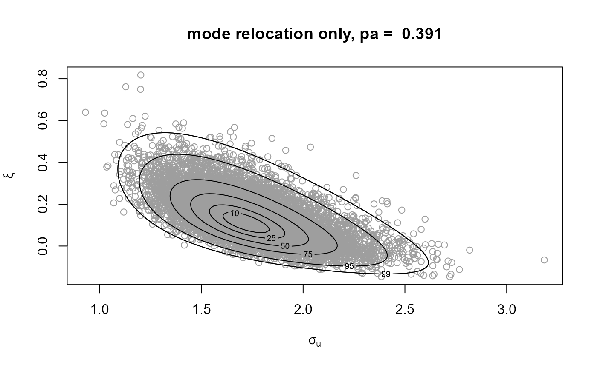
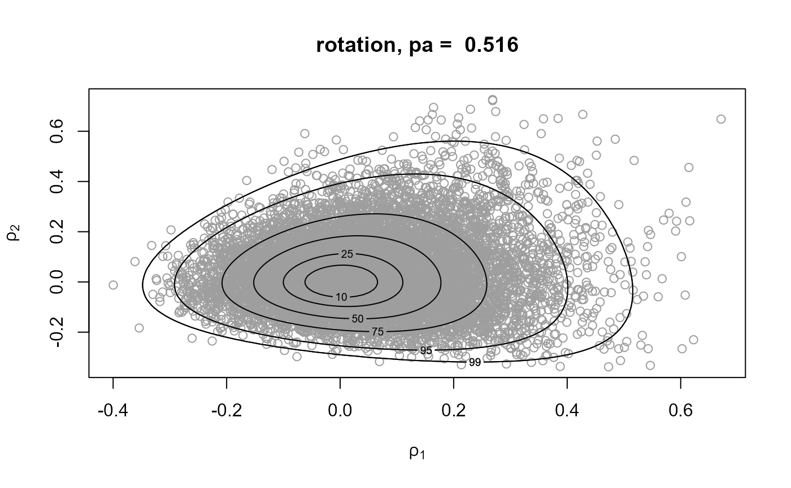
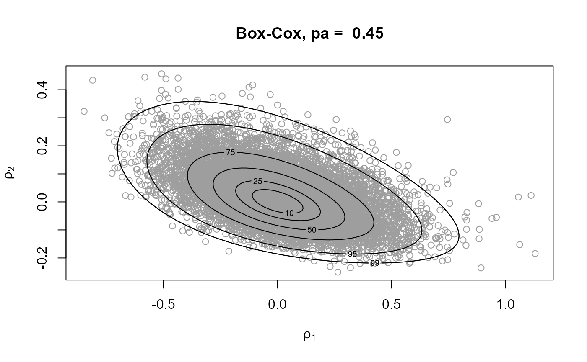
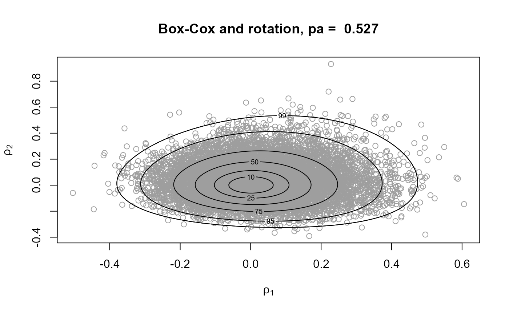
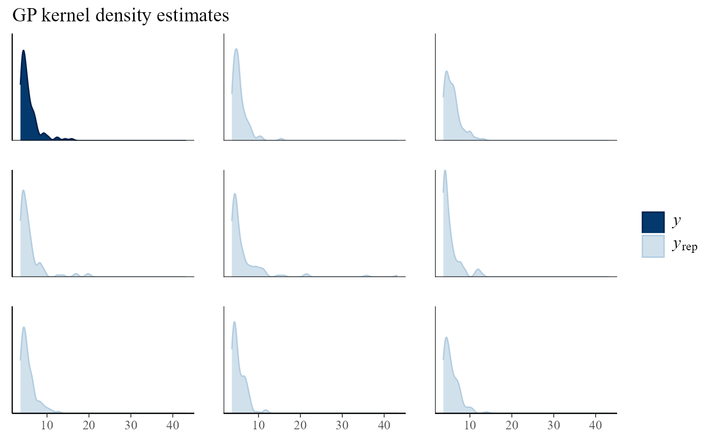
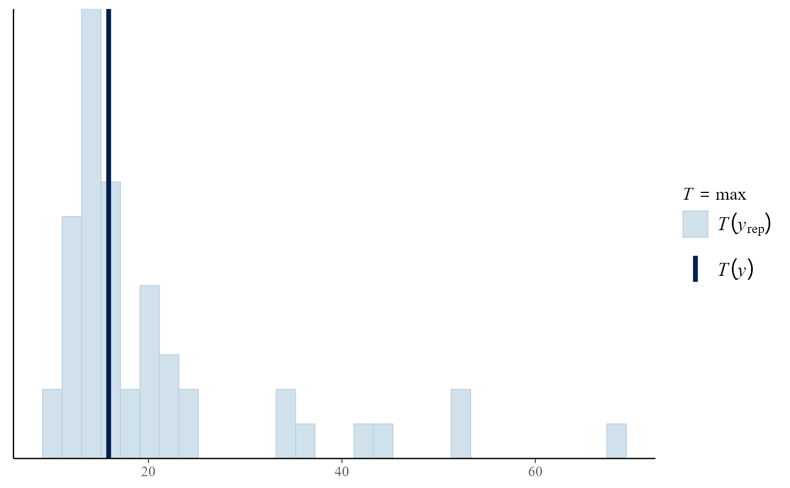
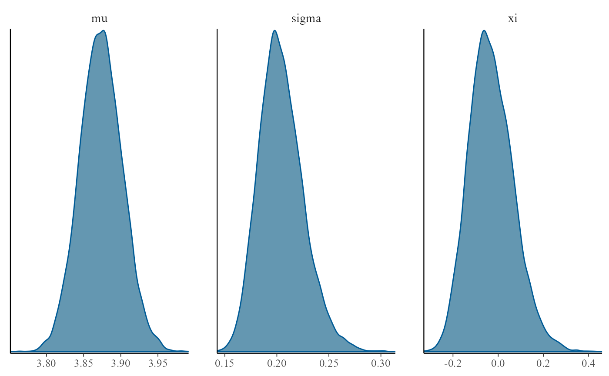
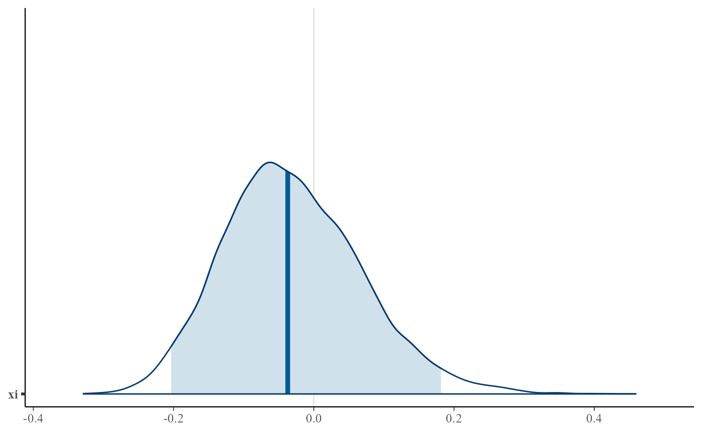
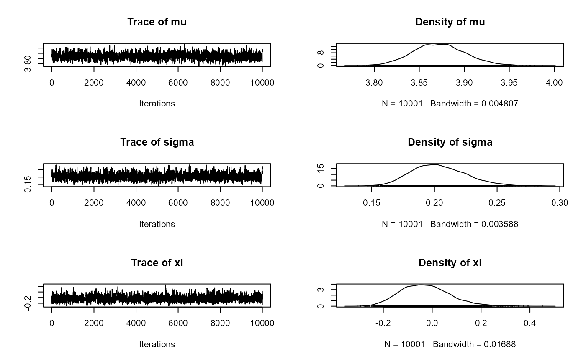
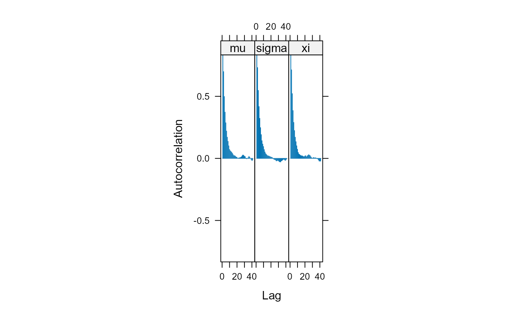

vignettes/ex2revdbayes.Rmd
ex2revdbayes.Rmdex2revdbayes.Rmd in Rstudiorevdbayes and evdbayes for sampling from a GEV posteriorThere is further information in the Introduction to revdbayes vignette.
# We need the evdbayes, revdbayes, ggplot2, bayesplot and coda packages
pkg <- c("evdbayes", "revdbayes", "ggplot2", "bayesplot", "coda")
pkg_list <- pkg[!pkg %in% installed.packages()[, "Package"]]
install.packages(pkg_list)
# Load all packages
invisible(lapply(pkg, library, character.only = TRUE))
# Simulation sample size
n <- 10000
# Information about the rpost function
?rpost
# Information about the gom (significant wave heights) data
?gom
# Sample on (sigma_u, xi) scale
gp1 <- rpost(n = n, model = "gp", prior = fp, thresh = u, data = gom,
rotate = FALSE)
# Rotation
gp2 <- rpost(n = n, model = "gp", prior = fp, thresh = u, data = gom)
# Box-Cox transformation (after transformation to positivity)
gp3 <- rpost(n = n, model = "gp", prior = fp, thresh = u, data = gom,
rotate = FALSE, trans = "BC")
# Box-Cox transformation and then rotation
gp4 <- rpost(n = n, model = "gp", prior = fp, thresh = u, data = gom,
trans = "BC")
# Samples and posterior density contours
plot(gp1, main = paste("mode relocation only, pa = ", round(gp1$pa, 3)))



rpost_rcpp() is faster than rpost(). See the rusting faster vignette.
gp2 <- rpost_rcpp(n = n, model = "gp", prior = fp, thresh = u, data = gom)Suggestion: increase the threshold and see how the appearance of the posterior changes.
There is further information in the Posterior predictive EV inference vignette.
# nrep = 50 asks for 50 fake replicates of the original data
# For each of 50 posterior samples of the parameters a dataset is simulated
gpg <- rpost(n = n, model = "gp", prior = fp, thresh = u, data = gom,
nrep = 50)
# Information about pp_check.evpost
?pp_check.evpost
# Compare real and fake datasets
pp_check(gpg, type = "multiple", subtype = "dens") + ggtitle("GP kernel density estimates")
# Compare real and fake summary statistics
pp_check(gpg, stat = "max")## `stat_bin()` using `bins = 30`. Pick better value with `binwidth`.
type and/or subtype for the first plotstat for the second plotModelling threshold excesses is only part of the story. We also need to model the proportion of observations that exceed the threshold.
bp <- set_bin_prior(prior = "jeffreys")
# We need to provide the mean number of observations per year
# The data cover a period of 105 years
npy_gom <- length(gom)/105
bgpg <- rpost(n = 1000, model = "bingp", prior = fp, thresh = u, data = gom,
bin_prior = bp, npy = npy_gom, nrep = 50)We can make predictive inferences about the largest value \(M_N\) to be observed over a time horizon of \(N\) years.
# Information about pp_check.evpost
?predict.evpost
# Predictive density of the largest value in `n_years' years
plot(predict(bgpg, type = "d", n_years = 200))
# Predictive intervals (equi-tailed and shortest possible)
i_bgpp <- predict(bgpg, n_years = 200, level = c(95, 99), hpd = TRUE)
plot(i_bgpp, which_int = "both")
i_bgpp$short ## lower upper n_years level
## [1,] 10.22407 40.58890 200 95
## [2,] 9.33864 72.62667 200 99
# The predictive 100, 200 and 500 year return levels
predict(bgpg, type = "q", n_years = 1, x = c(0.99, 0.995, 0.998))$y## [,1]
## [1,] 15.26298
## [2,] 18.15710
## [3,] 23.06399See Northrop and Attalides (2017) for an analysis of these data using an informative prior.
We compare three ways to sample from a PP posterior distribution
# Information about the rainfall data
?revdbayes::rainfall
# Set a threshold and use the prior from the evdbayes user guide
rthresh <- 40
prrain <- evdbayes::prior.quant(shape = c(38.9,7.1,47), scale = c(1.5,6.3,2.6))
# 1. Number of blocks = number of years of data (54)
r1 <- rpost(n = n, model = "pp", prior = prrain, data = rainfall,
thresh = rthresh, noy = 54, rotate = FALSE)
plot(r1)
# 2. Number of blocks = number of threshold excesses (use_noy = FALSE)
n_exc <- sum(rainfall > rthresh, na.rm = TRUE)
r2 <- rpost(n = n, model = "pp", prior = prrain, data = rainfall,
thresh = rthresh, noy = 54, use_noy = FALSE, rotate = FALSE)
plot(r2, ru_scale = TRUE)
# 3. # Rotation about maximum a posteriori estimate (MAP)
r3 <- rpost(n = n, model = "pp", prior = prrain, data = rainfall,
thresh = rthresh, noy = 54)
plot(r3, ru_scale = TRUE)
c(r1$pa, r2$pa, r3$pa)## [1] 0.1650574 0.1942464 0.3006343r1$pa, r2$pa and r3$pa?
# Information about the portpirie data
?revdbayes::portpirie
# Use the prior from the evdbayes user guide
mat <- diag(c(10000, 10000, 100))
pn <- set_prior(prior = "norm", model = "gev", mean = c(0, 0, 0), cov = mat)
mat <- diag(c(10000, 10000, 100))
gevp <- rpost_rcpp(n = n, model = "gev", prior = pn, data = portpirie)
# Information about plot.evpost
?plot.evpost
# Can use the plots from the bayesplot package
plot(gevp, use_bayesplot = TRUE, fun_name = "dens")
plot(gevp, use_bayesplot = TRUE, pars = "xi", prob = 0.95)
# evdbayes has a function ar.choice to help set the proposal SDs
# It does this by searching for values that achieve approximately
# target values for the acceptance rates (default 0.4 for all parameters)
?ar.choice
# Initialise evdbayes' Markov chain at the estimated posterior mean
init <- colMeans(gevp$sim_vals)
prop.sd.auto <- ar.choice(init = init, prior = pn, lh = "gev",
data = portpirie, psd = rep(0.01, 3),
tol = rep(0.02, 3))$psd## Accept Rate values and proposal standard deviations at each iterations...
## Accept Rate Prop. Std
## 0.86 0.98 0.97 0.01 0.01 0.01
## 0.66 0.89 0.89 0.03 0.03 0.03
## 0.47 0.76 0.75 0.056 0.071 0.071
## 0.36 0.58 0.57 0.077 0.141 0.14
## 0.48 0.44 0.42 0.052 0.224 0.218
## 0.43 0.37 0.44 0.06 0.28 0.218
## 0.42 0.47 0.38 0.066 0.205 0.265
## 0.43 0.43 0.42 0.066 0.234 0.199
## 0.4 0.41 0.44 0.071 0.258 0.199
## 0.4 0.37 0.41 0.071 0.258 0.214
## 0.4 0.4 0.42 0.071 0.246 0.214
post <- posterior(n, init = init, prior = pn, lh = "gev",
data = portpirie, psd = prop.sd.auto)
for (i in 1:3) plot(post[, i], ylab = c("mu","sigma","xi")[i])
post_for_coda <- coda::mcmc(post)
# Assuming no burn-in period
burnin <- 0
post_for_coda <- window(post_for_coda, start = burnin + 1)
# Trace plots and KDEs
plot(post_for_coda)
# The sampled values are autocorrelated
coda::acfplot(post_for_coda)
# Effective sample sizes (10,000 for revdbayes)
coda::effectiveSize(post_for_coda)## mu sigma xi
## 1303.753 1499.641 1328.177gelman.diag in the coda package.evdbayes and revdbayes are in agreement.